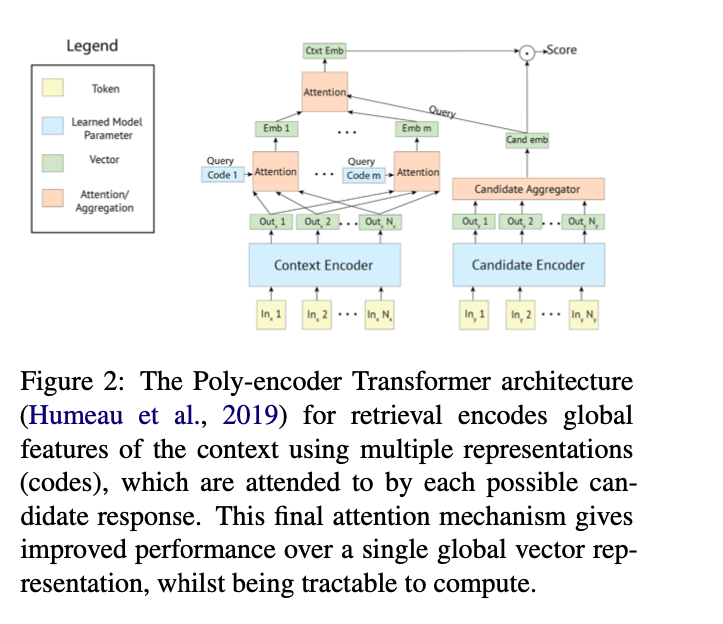
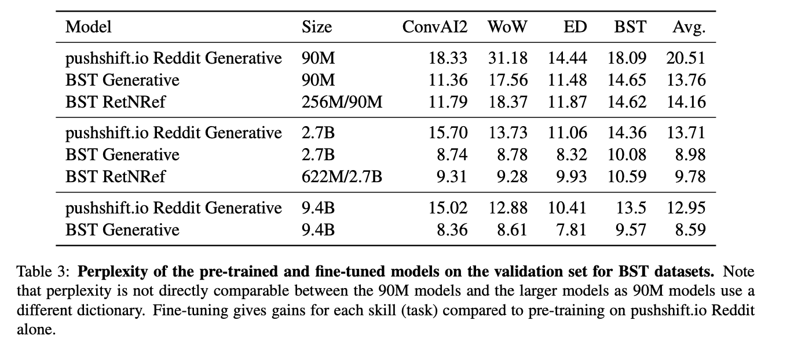
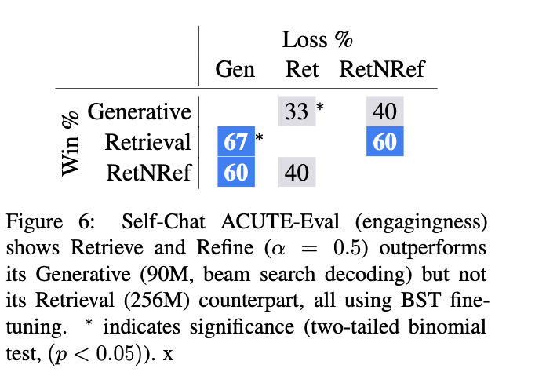

1. Read the title and make an opinion of what’s in the paper (e.g., the area, the task)
Year: 2020
Recipes for building an open-domain chatbot
This is a paper farther from my general knowledge because I have not invested much into thinking about open domain chatbots and the demands of the task. I suspect there will be a lot of engineering tricks to get the model to present reasonable responses in a majority of cases.
2. Read the abstract well and form a hypothesis of
- What’s new in the paper?
- Do you have a clear overview about what the paper is all about?
Building open-domain chatbots is a challenging area for machine learning research.
I can imagine this is true because of the complexity, subtlety and breadth of language humans possess.
we show that other ingredients are important for a high-performing chatbot
That is, in relation to brute force scaling of parameters and training data. The papers proposal seems to be in the area of the architecture of ‘recipes’ that improve chatbots.
[Good conversation requires] providing engaging talking points and listening to their partners, and displaying knowledge, empathy and personality appropriately, while maintaining a consistent persona.
It is easy for me to see how complex this is.
We show that large scale models can learn these skills when given appropriate training data and choice of generation strategy.
I think the key here is the choice of generation strategy but they don’t make that obvious. However, it may just be a release of a chatbot in 3 different sizes.
3. Look at the images and extract a set of “questions” about what is not clear about their method from the images. Now your job is to answer these questions by reading the paper.
The architecture is shown in fig2 below.

This Poly-encoder architecture is used in 2/3 of the architectures they evaluated.
4. Read the method aiming to answer your “questions” about the paper. Focus on understanding only the things relevant for the story (i.e., to understand the contribution).
We consider three types of architectures in this work: retrieval, generative, and retrieve-and-refine models
- Retriever
- score a large set of candidate responses
- Generator
- Generate responses from within a large model
- Retrieve and Refine
- Dialog Retrieval: Append retrieval response to input context of a generator
- Knowledge Retrieval: Inject world knowledge scored from retriever to the input context of a generator
For retrieve and refine, simply appending dialogue retrieval responses to the context of a generative model and training with MLE unfortunately does not yield satisfying results.
This motivates what they call -blending for Retrieve and Refine. Replace the retrieved response instead with the gold response % of the time, thus alpha is a hyperparameter that can be tuned.
Thus this is where “BlenderBot” gets its name, in the blending of the loss functions for Maximum likelihood with unlikelihood.
Said nicely in the paper:
Likelihood [] pushes up the probability of a gold token while unlikelihood [] pushes down the probability of negative candidate tokens .
For Decoding there are a number of choices an engineer must decide to produce realistic responses. The paper highlights these choices:
- Beam Search
- Sampling
- Restricted Response Length
- Subsequence Blocking (prevent repeat responses)
There is also a detailed discussion on the Training procedure.
5. Read the experiments to convince you that the show results are caused by their claim. Be aware that the experiments highlighted are the best scenarios and are fully hyper-parameter tuned.
These experiments are harder to understand because as they note in the paper, there are only ever proxies for human judgments, and some of this is up to personal opinion of preferences.
Table 3 shows the comparisons between the three model architectures, in their three different sizes for perplexity.

Figure 6 shows the self-chat performance, revealing that not any one model architecture between retrieval, generator, and RetNRef is always best.

6. Make sure you answered all your questions. Did the authors convince you that their story has the effect that they claim?
One problem of this paper I see is the authors did not present a clear contribution. It seemed they they presented everything that they tried, without much discernment of what works and what doesn’t. It is certainly good to present all results, but the text of the paper should make it clear what contributions are important and valuable, and what contributions were tried, but don’t add meaningful success to the model.
However in rebuttal, the landscape is currently complex and different combinations perform differently in different contexts, so I have enjoyed this paper and their proposals of architectures. Chat-botting is by no means solved and this paper has helped me see much of the complexities involved.